Along the edge, or through the middle
Two ways to solve a linear program, and the forty years of argument between them.
First, what the problem is. A workshop has some stock (planks, labour hours, saw time) and some things it can build out of that stock, each earning a known amount. It must decide how much of each thing to build. Every rule in sight is proportional: two tables take twice the planks of one and earn twice as much, and there is a fixed amount of everything. Find the plan that earns the most.
That is a linear program. The name is from the 1940s and has nothing to do with computer programming; programme meant a schedule of activities.
Problems of that shape are everywhere, and they have a property almost nothing else in optimisation has: they can be solved at enormous size, exactly, with a proof attached. How is the argument this guide is about.
In 1972 two mathematicians published a shape built to embarrass an algorithm. It is a cube, squashed so that its faces tilt a little instead of meeting square, and in ten dimensions it has 1024 corners. Turn the standard method for linear programming loose on it and the method stops at every one of them: 1023 hops to cross a shape that a better-chosen rule crosses in a single hop.
The method they were embarrassing was twenty-five years old at the time and was already drawing up refinery schedules and air force logistics. It still is. And in all those years, on the models people actually solve, it has never once behaved the way it behaves on that cube. The hop count keeps coming out at a small multiple of the number of rules in the problem, which is a number you can afford.
So the subject spent three decades holding two facts that did not fit together: a proven catastrophe, and nobody who had ever met one. It took until 2004 for anybody to explain the discrepancy.
That gap, between what the theory promised and what everyone could see, is where the second method comes from. It refuses corners altogether: it starts in the middle of the region of legal plans and creeps towards the answer along a curve, never touching a wall. The two were invented thirty-seven years apart, for different reasons, by people answering different questions, and they have been argued over ever since. Chapter 14 is where the argument ends up, and the ending is that they were never really rivals. A large solve today runs one of them and finishes with the other.
The plan. Chapters 1 to 3 build the walk and then show why it should be hopeless. Chapter 4 is the shape that proves it, and chapters 5 to 8 take that proof apart: what it is really about, what it is not about, and why the disaster it describes never arrives. Chapter 9 is the method that was polynomial first and lost anyway. Chapters 10 to 13 are the one that won a share. Chapter 14 is the division of labour the two of them settled into.
Every number below is computed by the code in this folder, in exact rational arithmetic wherever the arithmetic is exact, and asserted by a test. Historical claims are dated, and where the only source is somebody's own recollection the text says so.
0What this is
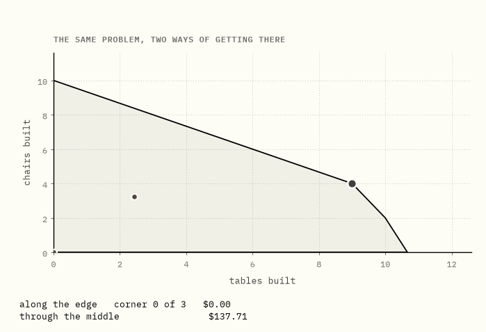
A workshop makes tables and chairs. It has 44 planks, 30 hours of labour and 32 hours of saw time. A table takes 4 planks, 2 hours of labour and 3 of saw time, and earns $30. A chair takes 2 planks, 3 hours of labour and 1 of saw time, and earns $20. It is the same workshop, with the same numbers, as the duality guide.
Draw every plan the workshop could legally carry out, so many tables across and so many chairs up, and they fill the shaded region above. Each straight edge is one of the limits running out: along one edge there are no planks left, along another no labour. The corners are where two limits run out at the same moment, and the walls are the edges themselves. Nobody chose that shape. It is simply what is left once each limit has taken its cut.
The best the workshop can do is 9 tables and 4 chairs, worth $350, and both routes drawn above arrive at it. They have almost nothing else in common.
The blue route only ever stands at corners. It hops from one to the next, three times, and stops. The red route never stands at a corner and never even touches a wall; it curves through the middle of the region and stops because it got close enough, not because it arrived anywhere.
That difference runs deeper than implementation. The two methods disagree about where the answer to a linear program lives. One says at a corner, the other says at the end of a curve through open space, and nearly everything in this guide, including which method your solver runs on which problem, follows from that disagreement.
In one sentence. Two methods, one answer, and no shared idea about where a solution lives.
1A new kind of problem
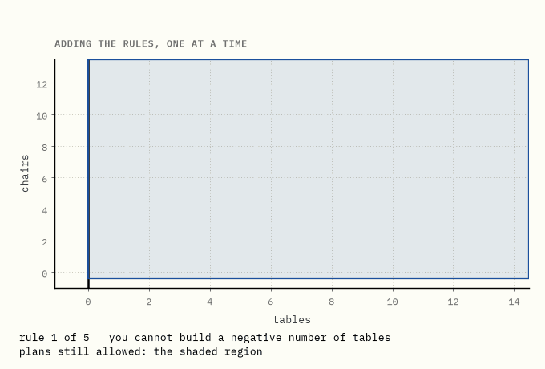
Nobody drew that region. It is what is left after each rule takes its cut, and its corners are simply the places where two rules run out at the same moment. Every method in this guide turns out to be, in some sense, an opinion about those corners: whether to visit them, avoid them, or ignore them entirely.
The problem itself is old in the way that arithmetic is old. What was new in the 1940s was treating it as a computational question with a general method attached, rather than as a modelling exercise to be hand-solved case by case.
1939, Leningrad. Leonid Kantorovich, asked by a plywood trust how to allocate work across machines, wrote up a general treatment of what he called problems of organising and planning production. It contained the essential ideas, including the multipliers that we would now call dual prices. It was published in the Soviet Union and went essentially unread in the West for well over a decade.
1947, Washington. George Dantzig, working on planning problems for the US Air Force, devised the simplex method. The word programming here has nothing to do with computers: a programme was a schedule or plan of activities, and a linear programme was one whose rules and objective were all linear.
Dantzig later wrote that he took the problem to John von Neumann, who on being shown it stood at a blackboard and lectured him for over an hour on what turned out to be duality theory, drawing on his work on games. It is a famous story and it may well be exactly right, but the account is Dantzig's own recollection and is not independently documented; treat it as such.
The recognition landed unevenly. In 1975 the Sveriges Riksbank Prize in Economic Sciences went to Kantorovich and T. C. Koopmans for the theory of optimal allocation of resources. Dantzig, whose method was by then running on every serious computer in the world, was not among the recipients. He received the National Medal of Science that same year.
In one sentence. The region and its corners are consequences of the rules, not choices anybody made, and the question from 1947 onwards was what to do about them.
2Along the edge
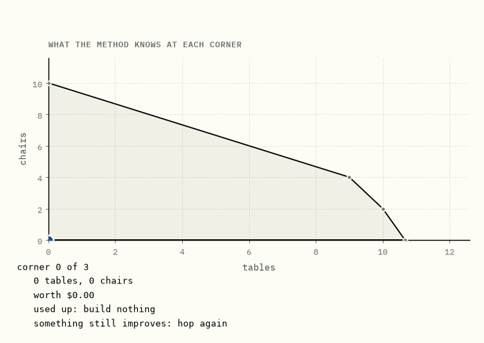
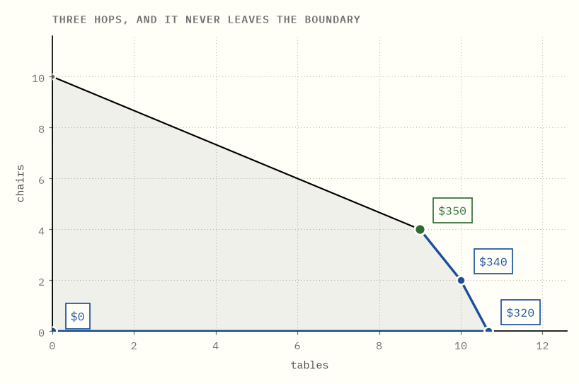
Before the walk makes any sense, one fact has to be established: if a linear program has an optimum at all, then some corner achieves it.
Here is why. The profit is linear, so walking along any straight line changes it at a constant rate: rising steadily, falling steadily, or staying flat, but never bending. (The quantity being maximised is called the objective, and here it is the profit.)
That is what rules out getting stuck. Stand anywhere in the region that is not a corner. There is always a direction you can move in without leaving the region along which the profit does not go down, so take it, and keep going until you run into a wall; then slide along the wall and repeat. A quantity that only ever changes at a constant rate has no hilltop in the middle of the region for you to be stranded on. So whatever the best value is, some corner attains it.
That converts an infinite search into a finite one, and the simplex method is what you get by taking the conversion seriously:
- Stand at a corner.
- Look along each edge leaving it. If one of them improves the objective, take it to the next corner.
- If none does, stop. You are optimal.
Step 3 is what makes this a method rather than a search. When no adjacent corner is better, no corner anywhere is better. The check is local and the conclusion is global, and buying that jump is the whole job of duality, worked out in the duality guide.
On the workshop, from a standing start:
| corner | plan | worth | what has run out |
|---|---|---|---|
| 0 | build nothing | $0 | nothing |
| 1 | 10⅔ tables | $320 | saw time |
| 2 | 10 tables, 2 chairs | $340 | saw time, planks |
| 3 | 9 tables, 4 chairs | $350 | planks, labour |
Three hops, out of five corners. At the last one every edge leads downhill, so it stops.
In one sentence. Simplex never guesses and never searches: it stands on a corner, improves along an edge, and knows it is finished when no edge improves.
3It should have been slow
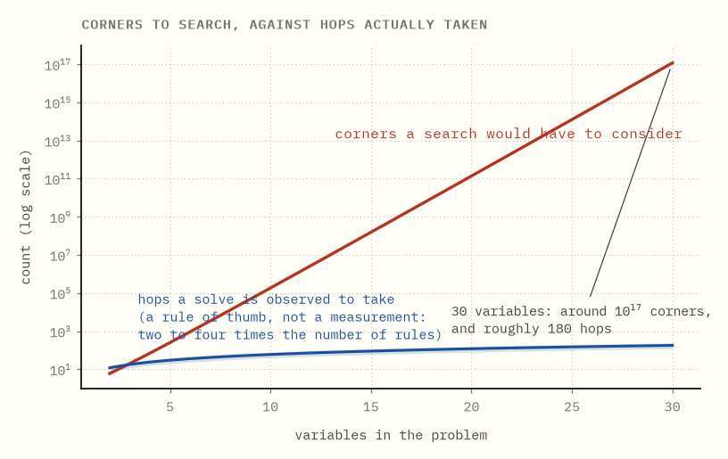
Now the arithmetic that should have killed the method in its first week.
A corner is where enough rules run out at once: with n variables, pick n of the rules and solve them as simultaneous equations. Every corner arises that way, so counting corners is really counting the ways of choosing which rules run out.
Take a problem with 30 variables and twice as many rules. A corner is then a choice of 30 rules out of the 60 available, and the number of corners cannot exceed the number of such choices: how many different committees of 30 you can pick from 60 candidates. That count has a name and a notation, C(60, 30), read aloud as "sixty choose thirty". At 30 variables it is about 1.18 × 10¹⁷. A hundred million billion, near enough.
Thirty variables is a toy. Real models have millions. If the walk had to see any appreciable fraction of the corners, the method would be useless at any size worth caring about.
It does not. In practice the number of hops tends to come out at a small multiple of the number of rules, which is a number you can afford. That has been the observed behaviour since the 1950s, on essentially everything anyone has thrown at it. (The band drawn above is that rule of thumb, not a measurement from this repository.)
So the method worked, spectacularly, and nobody could say why. Two questions sat open:
- Is there a bad case? Some input on which the walk really does visit an exponential number of corners.
- If bad cases exist, why does nobody ever meet one?
The first was answered in 1972. The second took until 2004.
In one sentence. The corner count says the walk should be impossible, and for twenty-five years the only evidence against that was that it kept working.
4Klee and Minty build a cube
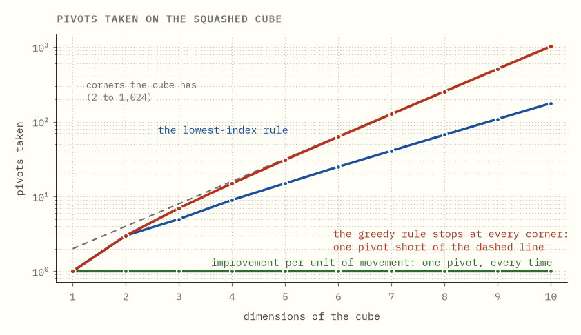
Victor Klee and George Minty presented their answer at a 1969 symposium; it appeared in print in 1972, under the title How good is the simplex algorithm? The answer was: in the worst case, not good.
Their construction is a cube in n dimensions that has been squashed, so that its faces tilt slightly instead of meeting at right angles. It has 2ⁿ corners, exactly as a cube should. It is not degenerate, not badly scaled by any standard anybody had, and not in any visible way a trick.
Step 2 of the walk left something open: when more than one edge leaving a corner improves the profit, which do you take? That choice is a separate ingredient of the method, and it has a name, the pivot rule. Dantzig's original one is greedy: take the edge that improves the profit fastest per unit of the thing being increased.
Run the walk on the cube with that rule and it visits every single corner before it stops. This repository's simplex, in exact rational arithmetic, confirms it: the cube in 10 dimensions has 1024 corners and takes 1023 pivots. Exactly 2ⁿ − 1, at every size tested.
The squashing is what does it. The tilt makes the greedy rule prefer the direction of fastest immediate improvement over the direction that would actually get somewhere, at every corner, all the way around the cube. The rule is not being stupid; it is being exactly as greedy as it was designed to be, against a shape built to punish greed.
You can check the claim off the chart rather than taking it on trust, and the easiest place is the left-hand end. At dimension 3 the cube has 2³ = 8 corners, which is where the dashed line sits. The red line sits at 7. Standing on 8 corners takes 7 hops between them, so a walk one pivot short of the corner count is a walk that missed nothing. Read across at any dimension you like and the gap stays exactly one: at dimension 10, 1024 and 1023.
In one sentence. The worst case is real, it is exponential, and it is not a pathological or degenerate input.
5Where the exponent lives
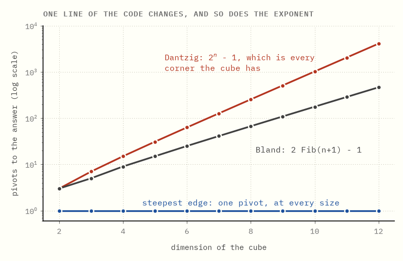
Chapter 4 reads like an indictment of the simplex method. It indicts one line inside it.
The three lines above come from the same simplex code on the same cubes. One function differs: the pivot rule, which picks the edge to walk along. That single substitution moves the count from doubling, to a gentler climb, to a single pivot.
- Dantzig's rule takes exactly 2ⁿ − 1 pivots. Every corner.
- Bland's rule, which ignores the numbers entirely and takes whichever improving edge comes first in a fixed ordering, takes exactly 2·Fib(n+1) − 1. At n = 10 that is 177 rather than 1023.
- Steepest edge, which measures improvement per unit of movement rather than per unit of variable, takes one pivot, at every size.
Nothing else was touched: same cube, same corners, same rule for deciding how far to go once a direction is chosen, same stopping test. Had the blow-up in chapter 4 belonged to the walk, swapping a single function could not have moved it, and it moved it from 1023 to 1.
So the honest reading of Klee and Minty is narrower than it first sounds. They did not show that walking corners is exponential. They showed that walking corners while always taking the steepest immediate gain is exponential, which is a statement about greed.
Try it yourself → Hold the dimension steady and change only the rule, then hold the rule steady and raise the dimension. One of those controls sets the exponent.
In one sentence. The exponent in chapter 4 belongs to the rule that picked the edge, not to the method that did the walking.
6Bland's rule finishes, slowly
Bland's rule is the one to be careful about, because it is easy to draw the wrong lesson from it.
Its guarantee is that it cannot cycle. A simplex walk can in principle return to a corner it has already left and go round forever; Bland's rule makes that impossible, so the walk always terminates. That is a real property, and it is why the other guides in this repository use it.
Termination is a promise about the end of the walk and says nothing about its length. On the cube we can measure the difference exactly.
Start with the formula, since it arrives out of nowhere. The Fibonacci numbers are what you get by starting with 1 and 1 and making every term the sum of the two before it: 1, 1, 2, 3, 5, 8, 13, 21, 34, 55, 89, and on up. Bland's count on the cube of dimension n is the term at position n + 1, doubled, less one. At n = 10 the term is 89, so the count is 177.
Now watch what that does as the cube grows. The counts run 3, 5, 9, 15, 25, 41, 67, 109, 177. Divide each by the one before it. 5 over 3 is one and two thirds; 9 over 5 is 1.8; 15 over 9 is back to one and two thirds. They bounce about at first. Then they settle: by 109 over 67 they have almost stopped moving, and 177 over 109 sits a whisker above 1.6 and is still edging down.
What they are closing in on is the golden ratio, about 1.618, which is what ratios of consecutive Fibonacci numbers always do. So each extra dimension multiplies Bland's pivot count by about 1.618, where Dantzig's rule multiplies by 2. Both are exponential; one simply has a smaller base, and a smaller base buys you a few dimensions rather than a different answer. Avis and Chvátal established this in 1978.
The cube is what lets that be shown rather than asserted, and it is the reason a guarantee should always be read for exactly what it promises and nothing more.
In one sentence. Bland's rule promises that the walk will finish, not that it will finish soon, and on the cube its count still multiplies by about 1.618 for every dimension added.
7Every rule has a cube
The obvious next move is to declare steepest edge the winner. One pivot at every size is hard to argue with.
That reading is wrong, and the number behind it says nothing about steepest edge and everything about this particular cube. Klee and Minty built their shape to punish a rule that chases the fastest immediate gain per unit of variable. Steepest edge measures gain per unit of movement, so it simply is not the rule the trap was set for, and a trap that one animal walks past tells you nothing about that animal.
The traps also generalise. Deformed constructions have since been produced against essentially every rule anyone has proposed, including randomised ones, where the construction has to defeat an average rather than a fixed sequence of choices. The last well-known holdout, Zadeh's rule, survived until 2022.
No pivot rule is known to be polynomial, and whether one exists is open.
The geometry underneath is open too, and it is the stronger statement, so separate it out. Forget which rule you use and forget how a method chooses. Ask only whether a short route between two corners exists at all. That is the Hirsch conjecture. Klee and Walkup disposed of the unbounded case in 1967, and Francisco Santos disproved the bounded version in 2012. The weaker polynomial Hirsch conjecture, which asks only for a polynomial bound on the length of the shortest route, remains unsettled.
So it is not merely that nobody has found a rule that is always fast. Nobody has shown there is always a fast route for a rule to find.
In one sentence. Bad cases exist for every rule anyone has proposed, and whether a short route between corners always exists is itself unsettled.
8Why nobody ever meets one
Now back to the question chapter 3 left standing, which the last four chapters have made sharper rather than easier. Bad cases are not a quirk of one rule. They are everywhere in the theory. And they are nowhere in practice.
The resolution came from Daniel Spielman and Shang-Hua Teng in 2004, and it is called smoothed analysis. It changes the question being asked.
Worst-case analysis asks: over all inputs of this size, what is the largest number of pivots? Smoothed analysis asks something the machine can actually be handed: take any input at all, including a Klee-Minty cube, jiggle every number in it by a tiny random amount, and now ask for the expected number of pivots.
The answer is polynomial.
Read what that does to the cube. The cube is not merely rare; it is unstable. The exponential behaviour depends on its faces tilting at exactly the angles Klee and Minty chose, and a perturbation too small to see destroys it. The bad cases are real, and they are knife-edges, and real data, whether measured quantities or prices or capacities or anything else that arrived carrying noise, is never sitting on a knife-edge.
So the seventy-year puzzle was never that the theory was wrong. Worst-case analysis had been answering a question whose answer says very little about the inputs anybody actually has.
In one sentence. The bad cases survive every rule but not a random nudge, which is why they fill the theory and never arrive in the post.
9Polynomial, and slower
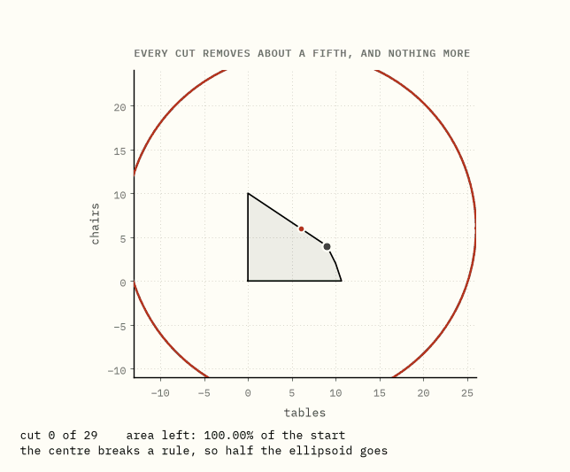
In 1979 Leonid Khachiyan showed that linear programming is solvable in polynomial time, using the ellipsoid method. This was genuine news. It made newspapers outside mathematics, which is not a thing that happens to algorithms.
The method ignores the region's shape completely. Wrap everything in an ellipsoid and ask whether its centre is a legal plan. If it is not, then some rule it breaks tells you the answer cannot be on that side, so throw that half away and wrap the survivor in a new ellipsoid. Repeat. Each step shrinks the volume by a guaranteed factor, so eventually the ellipsoid is smaller than any region with room in it, and if you have not found a point by then there was none.
The bound is honest and the method is dreadful. In two dimensions the guaranteed shrink per step is exp(−1/4), about 0.779: each cut is promised to remove barely a fifth. This repository's implementation achieves 0.7698 every single step, which is the smallest ellipsoid that can contain the surviving half, and it never does better, because there is no mechanism by which it could.
Ask it to find a plan worth at least $349 in the workshop and it takes 29 cuts. The walk in chapter 2 reached the exact optimum of $350 in three hops.
Worse than merely slow, it is slow at a rate you can calculate in advance, and the rate falls straight out of that 0.7698. One more decimal digit of accuracy means pinning the answer down ten times more tightly than before. But the ellipsoid does not shrink distances, it shrinks area, and area goes as the square of distance, so pinning down ten times tighter costs a hundredfold cut in area. The question is therefore how many multiplications by 0.7698 it takes to reduce an area to a hundredth of itself. Ten of them leave about a fourteenth, which is nowhere near enough. Another seven or so finish the job. The count works out at 17.6 cuts per decimal digit, and it stays 17.6 forever: the hundredth digit costs exactly what the first one did. And it never produces an exact answer at all.
Polynomial is a statement about how the cost grows, not about how large it is, and a method can be polynomial and still lose to an exponential one on every instance anybody runs. Khachiyan's result reframed the theory of the subject and changed nobody's software.
In one sentence. The first polynomial method took its worst case on every input, which is exactly why its worst case was provable.
10The wall that pushes back
In 1984 Narendra Karmarkar, at Bell Labs, published a polynomial method that was also fast. That combination was new, and it restarted the argument.
The idea that ended up mattering most is not the projective transformation Karmarkar originally used but the reformulation the field settled on shortly after, and it starts from a complaint about corners. Every method so far has had to treat a wall as a hard edge: you are on the legal side or you are not, and the moment you touch one the rules change. That is what makes the problem combinatorial. So get rid of the edges and make the walls push.
One word and one letter first, and between them they are the only new notation in this guide. The slack in a rule, for a particular plan, is how much of that rule is still going spare. The workshop has 44 planks; a plan that consumes 40 of them has 4 planks of slack. Every rule has its own slack, and so does each of the two floors, since you cannot build a negative number of chairs. Slack is positive everywhere inside the region and exactly zero on the walls, which is what makes it the right thing to build a penalty out of.
So score a plan not by its profit but by this:
profit + μ × (sum of the logs of the slack in each rule)
and hunt for the best score. The letter is μ, Greek lowercase mu, and it is simply a dial: a number you choose that says how hard the walls push. Read it as "how strongly the walls repel" every time it appears.
The second term is the whole idea, and the logarithm in it is doing something specific that no ordinary penalty would.
A logarithm of a number smaller than one is negative, and it has no floor at all. Halve the slack and the log drops by a fixed amount. Halve it again and it drops by that same amount again. Slack of a thousandth, a millionth, a billionth, and the log is still marching downwards with no sign of bottoming out. Compare that with penalising, say, the reciprocal of the slack, or its square: those also grow, but a plan can still buy its way through them if the profit on the other side is large enough. Nothing outbids a term with no lower bound. A plan pressed against a wall scores minus infinity, and no amount of profit is worth minus infinity.
So whatever plan wins this score is strictly inside, with room left in every rule at once, and it got there without anybody writing down a rule that says stay inside. The boundary has stopped being a constraint and become a force.
That is the trade the rest of this guide turns on. μ is the strength of the force, and it is yours to set.
In one sentence. Replacing each wall with a penalty that has no floor turns "stay legal" from a rule to be enforced into a force to be balanced.
11The central path
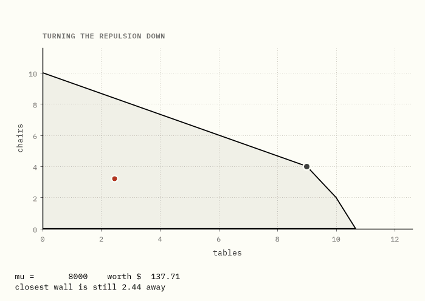
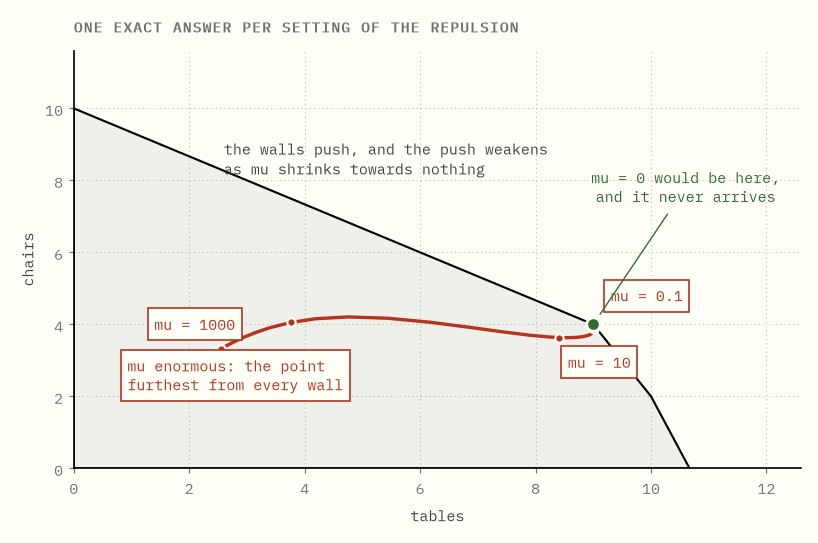
One setting of μ gives one point. Sweep it and the points join up.
- μ enormous. Profit is irrelevant; the point sits as far from every wall as it can get. For the workshop that is (2.428, 3.209), the analytic centre, which is a property of the shape alone.
- μ shrinking. The walls push more weakly, and the point drifts towards profitable territory.
- μ approaching zero. The penalty stops mattering and the point approaches the true optimum, which is on the boundary, without ever getting there.
The curve traced out is the central path.
Now the thing that separates this from every other method producing a sequence of approximations, and it is easy to read past. Every point on that curve is exact. It is the precise, perfectly-attained optimum of a different and perfectly well-posed problem: the one where the walls repel with strength μ.
So the method never approximates anything. It solves an easy nearby problem exactly, then changes the problem to a less nearby one and solves that exactly too. What shrinks between rounds is not error. It is the distance between the question you can answer and the question you were asked.
Two things about where this came from. The barrier idea was not new in 1984. Ragnar Frisch proposed the logarithmic barrier in 1955, and Fiacco and McCormick had built a general nonlinear framework on it by 1968. What was new was the complexity analysis and the demonstration that this could beat simplex on real problems. And the resemblance to Karmarkar's method was not a coincidence anyone had to guess at: within two years it had been shown that his method is equivalent to a projected Newton barrier method.
Try it yourself → Drag μ from one end to the other and watch the point leave the centre of the shape and go looking for money.
In one sentence. Sweeping μ traces a curve every point of which is an exact answer to a slightly wrong question.
12What the barrier actually does
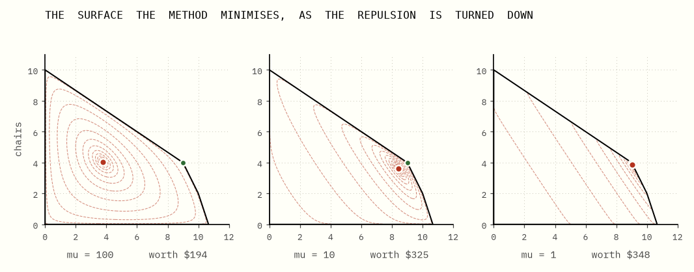
The path is the trail of minima. The surface is what produces them, and it explains why any of this works. (Solvers flip every sign and hunt for the smallest score rather than the largest, which is why these are pictures of bowls with a bottom rather than hills with a peak. Same problem, drawn upside down.)
At μ = 100 the penalty dominates and the surface is a broad bowl sitting in the middle of the region. Its minimum is worth $194, which is nowhere near optimal and is not trying to be. At μ = 10 the bowl has tilted towards profit and its bottom has slid to a point worth $325. At μ = 1 the contours are crushed into the corner and the minimum is worth $348.
At every stage there is exactly one minimum and the surface around it is smooth and curved. That is what the whole construction was for, because a smooth bowl with one bottom is precisely what Newton's method is for.
Newton's method goes like this. Stand anywhere on the surface and measure two things about the ground under your feet: which way it slopes, and how fast that slope is changing. Those two measurements are enough to fit a parabola through where you stand, or in two variables a bowl, and the bottom of a fitted bowl is something you can solve for directly. Jump to it. You have not arrived, since the fitted bowl was only a local likeness of the real surface, but you are nearer than you were, so measure again where you land and fit a fresh one. The likeness improves as you close in, and near the bottom each step roughly doubles the number of correct digits. A handful of steps is usually the whole story.
The number of steps does not depend on how many corners the region has, because nothing in the computation ever mentions a corner.
The one safeguard that matters is damping. A full Newton step will cheerfully walk through a wall, where the objective is not merely worse but undefined, so each step is halved until it lands somewhere legal. That is the entire defensive apparatus.
Compare what the two methods are counting. Simplex counts corners visited, and how many that will be is a combinatorial question about the shape. The barrier counts Newton solves, and how many that will be is a question about how fast you turn μ down.
In one sentence. Turning the boundary into a smooth penalty converts a combinatorial problem into a sequence of calculus problems, and calculus problems come with step counts you can predict.
13A gap you can forecast
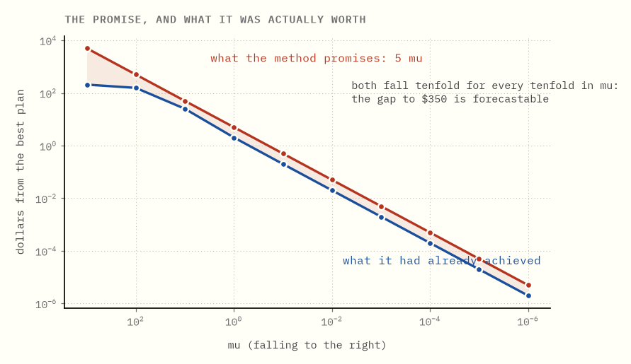
This is the property that decided real deployments, and it has nothing to do with speed.
A point on the central path arrives with a receipt. The gap between what it is worth and the best possible is at most μ times the number of walls. The workshop has five walls (three rules and two floors), so the bound is 5μ:
| μ | plan | worth | promised within | actually within |
|---|---|---|---|---|
| 100 | 3.762, 4.053 | $193.92 | $500.00 | $156.08 |
| 10 | 8.408, 3.633 | $324.90 | $50.00 | $25.10 |
| 1 | 9.019, 3.870 | $347.96 | $5.00 | $2.04 |
| 0.1 | 9.004, 3.984 | $349.80 | $0.50 | $0.20 |
| 0.01 | 9.000, 3.998 | $349.98 | $0.05 | $0.02 |
Where does a bound like that come from? Two ingredients, one of which this guide can show you and one of which it is going to quote.
The first is a fact about the path. Each wall pushes the plan away from itself, and at a point on the central path the strength of that push is μ divided by the slack in that rule: get twice as close and the wall shoves twice as hard. That push is a price in exactly the sense of the duality guide: what one more unit of that resource would be worth. Now multiply a wall's price by the slack left in that rule. The slack cancels, and what remains is μ. Every wall, the same μ.
The second ingredient is quoted rather than derived: duality says that the amount a plan is leaving on the table is the sum, over the rules, of each rule's price times the slack left in it. The duality guide builds that sum, and at a true optimum every term in it is zero, which is why a resource with something to spare is worth nothing. The central path is that same picture with the zeros replaced by μ. Five walls, one μ apiece, and the total you might still be missing is 5μ.
Divide μ by ten and you divide your remaining ignorance by ten. Before running anything, you can say how many more rounds buy how many more digits.
Simplex offers nothing comparable. Standing at a corner, you know what you have and you know it is not yet optimal, but the number of hops left is not a quantity you can ask about; every corner looks like the ones before it right up until the last one. That is fine when the solve takes a second. It is a different matter when it takes six hours on a model due at 6am, and it is the reason interior point methods took over the very large end of the market rather than the whole of it.
In one sentence. The barrier tells you how far from optimal you are while you are still running; the walk can only tell you once it has stopped.
14Neither one won
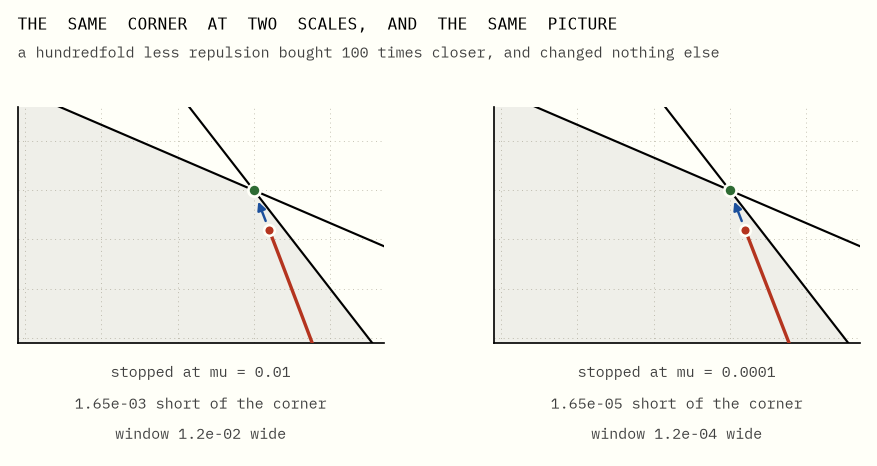
Both panels show the same corner. The right one is drawn a hundred times larger, with the repulsion turned down a hundredfold, and the point lands exactly 100 times closer. The picture does not change. Zooming in and tightening the tolerance move together, so there is no setting at which the point becomes a corner. It never lands.
Often that does not matter. Sometimes it matters a great deal:
- Reading off which rules are binding, which is what a shadow price is attached to, needs an actual corner. Nearly-tight is not tight.
- Warm starting. Change one number in the model and a simplex basis usually re-optimises in a few pivots. An interior point solve mostly starts again, which is why branch-and-bound trees, where thousands of nearly-identical LPs are solved in sequence, still run on simplex.
- Anything downstream that wants a vertex, including most of what branch and price does.
So a modern barrier solve usually ends with crossover: hand the interior point to a simplex-style routine and let it walk the short distance to a real corner. The two methods are stages of one program rather than competitors in it.
The rough division of labour today:
| tends to win on | |
|---|---|
| simplex | small and medium models, warm starts, anything inside a search tree, when you need a basis |
| interior point | very large and sparse models, first solves from cold, when you want a forecastable stopping point |
| crossover | whenever the second one is faster but the answer has to be a corner |
And the theoretical question underneath all of it is still open. Nobody knows whether a pivot rule exists that makes simplex polynomial. Nobody knows whether a strongly polynomial algorithm for linear programming exists at all: one whose step count depends only on the number of rules and variables, not on how many digits the numbers have. That is the ninth of Smale's problems for the 21st century, and it is unsolved.
Two methods, seventy-odd years, and the argument is not finished.
In one sentence. The walk and the path solve different halves of the same job, which is why every serious solver contains both and finishes with the first one.
What the plain words are really called
| this guide says | everyone else says |
|---|---|
| the region of legal plans | the feasible region, a polyhedron |
| a corner | a vertex, or a basic feasible solution |
| which edge to walk along | the pivot rule or pricing rule |
| improvement per unit of movement | the steepest edge rule |
| the squashed cube | the Klee-Minty cube |
| jiggle the input and re-ask | smoothed analysis |
| the repulsion strength μ | the barrier parameter |
| the curve of minima | the central path |
| the point furthest from every wall | the analytic centre |
| the receipt a path point carries | the duality gap |
| walking the last bit to a corner | crossover |
Running the code
make bootstrap # once, from the repository root
cd corners-vs-centre && make verify
The simplex here is exact rational arithmetic with a pluggable pivot rule, so a step count is a step count and not an artefact of rounding near a degenerate corner. The barrier and ellipsoid routines are floating point, as they must be, and every claim made about them is checked against the exact optimum the simplex returns. The two closed forms in chapters 5 and 6 are asserted against the formulas, not against stored numbers, at every dimension up to 12.